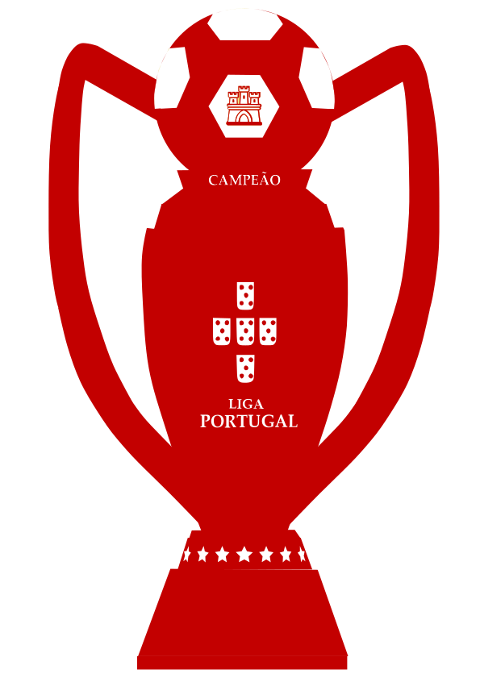
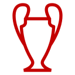

Gewonnene Portugiesische Meisterschaften
- 1936
- 1937
- 1938
- 1942
- 1943
- 1945
- 1950
- 1955
- 1957
- 1960
- 1961
- 1963
- 1964
- 1965
- 1967
- 1968
- 1969
- 1971
- 1972
- 1973
- 1975
- 1976
- 1977
- 1981
- 1983
- 1984
- 1987
- 1989
- 1991
- 1994
- 2005
- 2010
- 2014
- 2015
- 2016
- 2017
- 2019
- 2023

Taça de Portugal
- 1940
- 1943
- 1944
- 1949
- 1951
- 1952
- 1953
- 1955
- 1957
- 1959
- 1962
- 1964
- 1969
- 1970
- 1972
- 1980
- 1981
- 1983
- 1985
- 1986
- 1987
- 1993
- 1996
- 2004
- 2014
- 2017
Portugiesischer Liga-Pokal
- 2009
- 2010
- 2011
- 2012
- 2014
- 2015
- 2016

Portugiesischer Supercup
- 1980
- 1985
- 1989
- 2005
- 2014
- 2016
- 2017
- 2019
- 2023

Europapokal der Landesmeister
- 1961
- 1962
Coupe Latine
- 1950